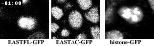
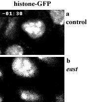
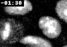

| ||||||||||||||
|
|
|
||||||||||||||||||
| Home Help Feedback Subscriptions Archive Search Table of Contents | |||||||||||||||||||
| ||||||||||||||||||
| QuickTime Video |
Movie 1
Distribution of EAST-GFP fusion protein in live embryos. Two versions of EAST fused to GFP and expressed using the GAL4 system were used to track their distribution in dividing cells from prophase until early anaphase of the next cell cycle. A cell from a different embryo expressing histone-GFP is shown for reference. On nuclear envelope breakdown, the EAST fusion proteins leak from the nucleus into the cytoplasm and are recruited back to the daughter nuclei after cytokinesis. Note the difference between EASTFL (1-2336) and the truncated EASTDC (1-1573) version during mitosis. EASTFL remains enriched in the region previously occupied by the interphase until anaphase, whereas EASTDC shows even diffusion during prometaphase.
| QuickTime Video |
Movie 2
Loss of east results in irregular movements of condensed chromosomes during prometaphase. Mitotic domains were observed using the histone-GFP DNA marker in control and east(mat)hop-1 embryos. Time-lapse recordings were acquired at 15 second intervals. (a) Chromosomes in wt remain centered and bunched together. (b) In an east(mat)hop-1 embryo, they drift apart and remain separated when the control counterpart is already undergoing anaphase.
| QuickTime Video |
Movie 3
Time-lapse recording of an east(mat)hop-1 embryo expressing histone-GFP. Chromosomes display enhanced mobility and drift to the cell cortex. Onset of anaphase is delayed. Compare with wt cell in Movie 2. Brightness was increased to highlight diffuse fluorescence in the cytoplasm appearing after NE breakdown.
| ||||||||||||||||||